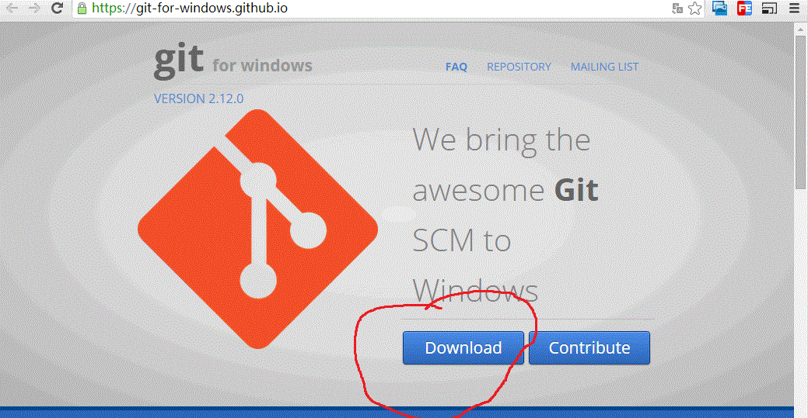
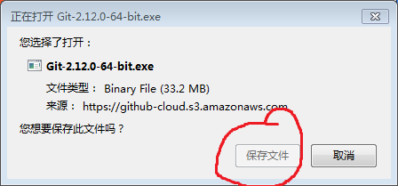

首先我们要知道git是什么。Git是目前世界上最先进的分布式版本控制系统。
它的作用通俗点说就是在个人电脑上建立一个库，使得人们可以脱离网络进行工作。
既然每个人的电脑都有一个完整的版本库，那多个人如何协作呢？
比如说自己在电脑上改了文件A，其他人也在电脑上改了文件A，这时，你们两之间只需把各 自的修改推送给对方，就可以互相看到对方的修改了。
这次课我们是需要了解最基本的git的安装与最简单的命令的使用，如：如何提交与同步。
我们现在常用的都是windows操作系统，msysgit是windows版的Git,如下：

单击download下载

保存文件